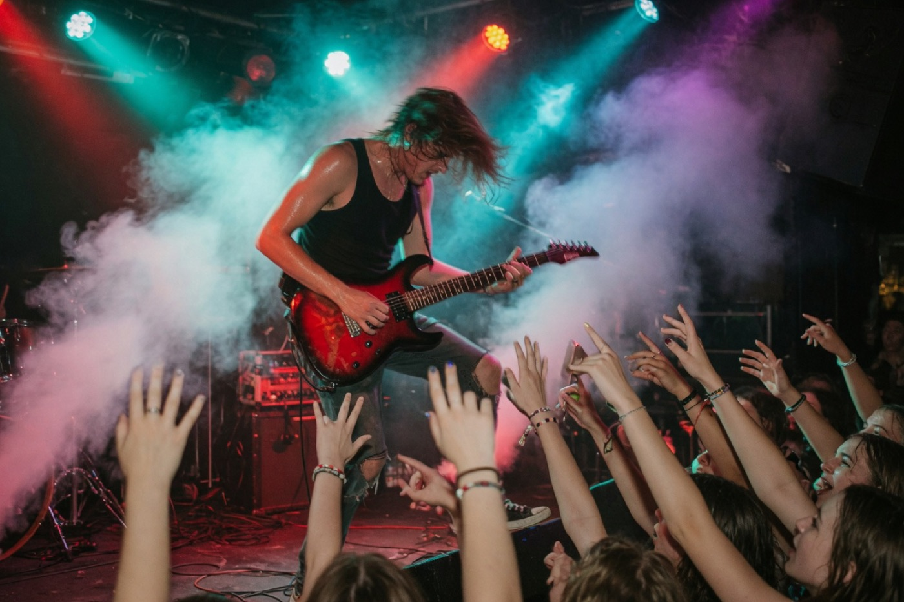

Salle de musiques actuelles · Genève
400 places. Pas de barrière.
Une salle petite, un son trop grand. Portes à 20 h, premier accord à 21 h 30. Rue des Gazomètres 8, 1205 Genève.
Ce soir · 28 CHF · 21 h 30
Kite + Nerida
Première partie Nerida à 20 h 45. Kite jusqu’à minuit. La salle se vit debout, au milieu.
